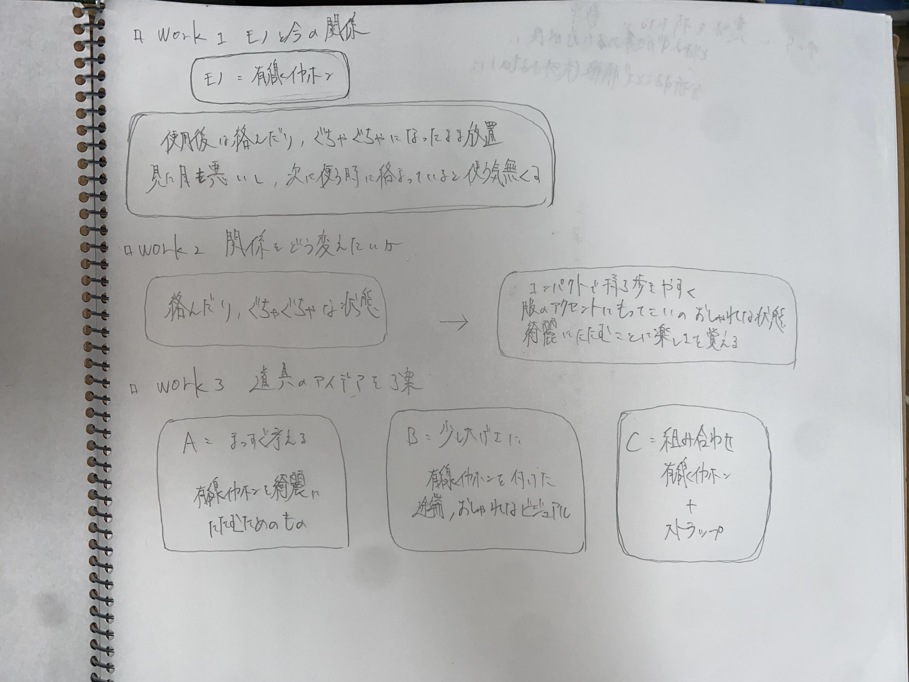
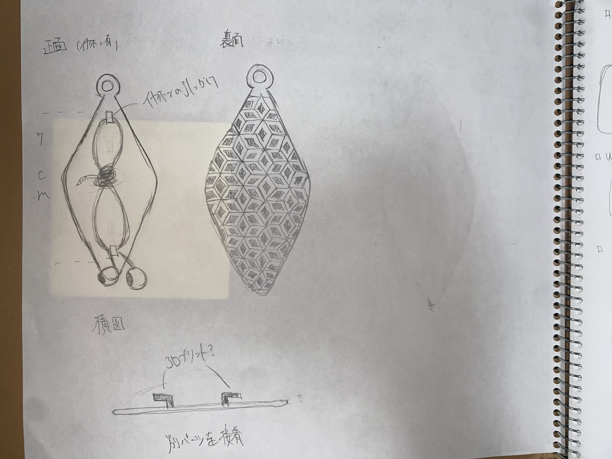
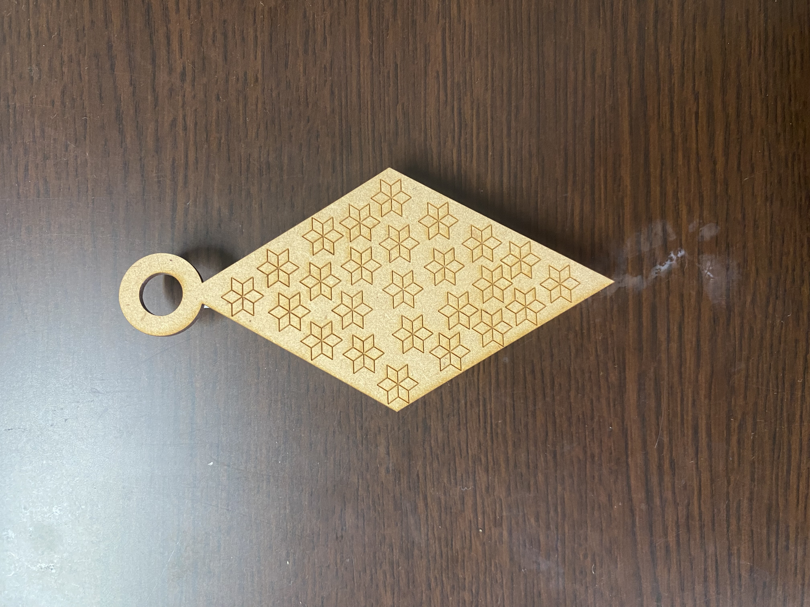
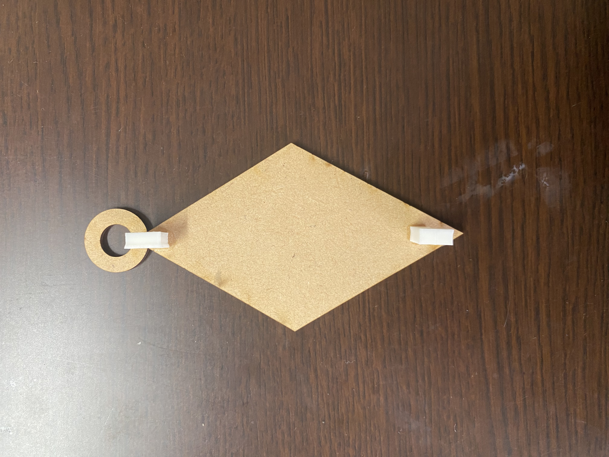
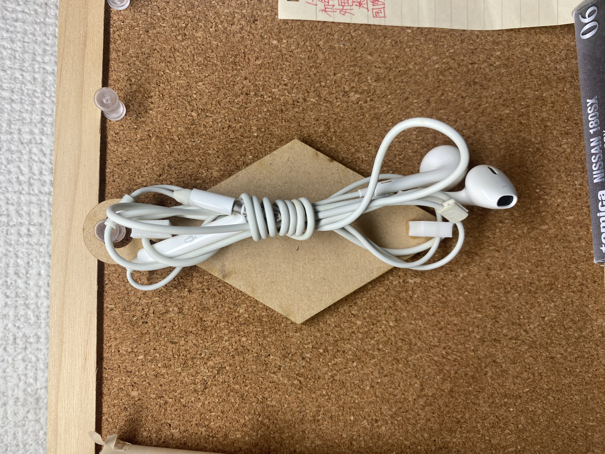
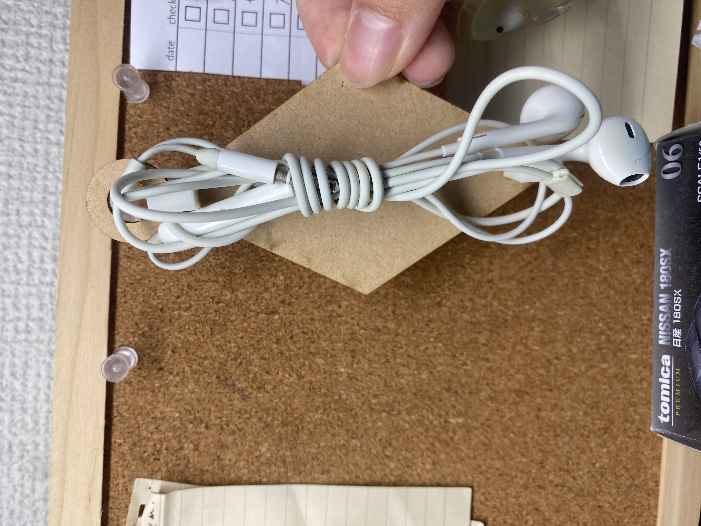
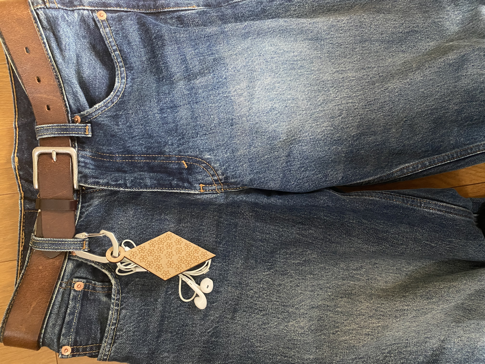
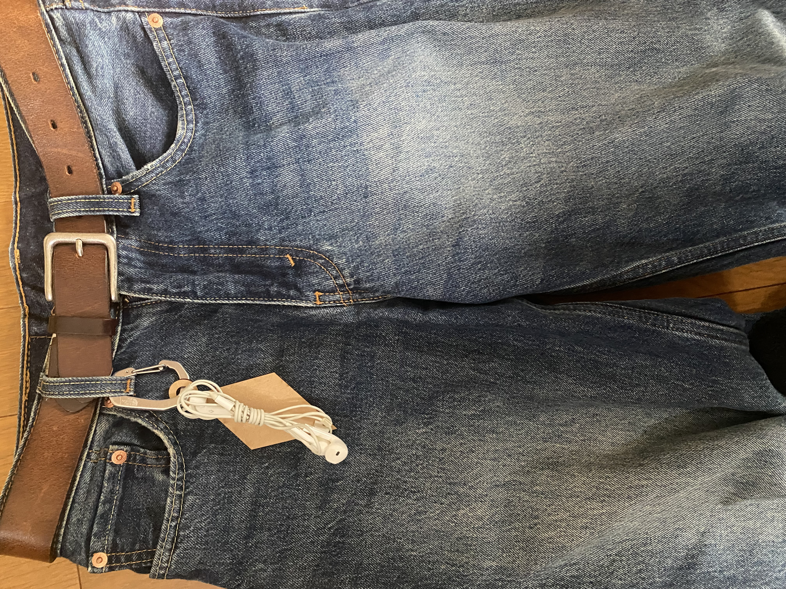

Computer-Controlled Cutting
作品名 有線イヤホルダー
workとスケッチ


「作品の説明と写真」
ワイヤレスイヤホンを使用することが増えた今でも有線のものを使っている人を多く見かける。
私自身も有線のものを使うことが時々ある中で、誰もが悩まされる「絡まり」の解決策として作成した。
シンプルな服装が風潮となる今にファッションのアクセントとして身に着けられるものにしたいと考えた。


本体の形、模様をひし形で統一している。木の板でパーツを作ると板が薄く、耐久性が低くて脆かったため3Dプリンターを用いてパーツを作って接着剤で一体化。


実際にイヤホンをつけてみた。輪の部分を使って壁などにかけることもできるので置く場所にも困らないし、結ばれているのですぐに持ち運びできる。


カラビナにひっかけてファッションのアクセントにもなる。
今まで絡まったままでなおざりにされたイヤホンが綺麗にまとまることで気分も上がるのではないだろうか。
また、自分で綺麗にした状態が自分のオシャレに直結するという点から日々の心の満足感と習慣になると感じる。
設計ファイル
aiファイル
dxfファイル
パーツファイル